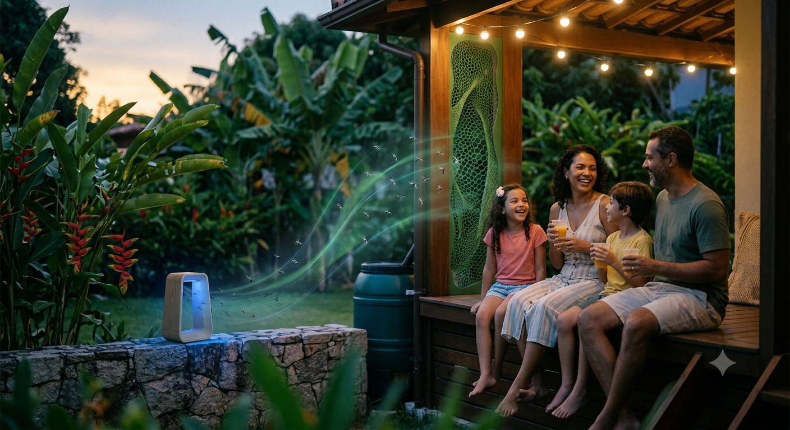

Tecnologia inteligente contra muriçocas
Uma armadilha sustentável desenvolvida para eliminar muriçocas utilizando princípios de atração e baixo consumo de energia.

🚧 PROJETO EM DESENVOLVIMENTO
A MosquiTrap está sendo desenvolvida como uma solução sustentável para combater muriçocas sem produtos químicos. Para conhecer o funcionamento completo, acesse a página "Como Funciona".